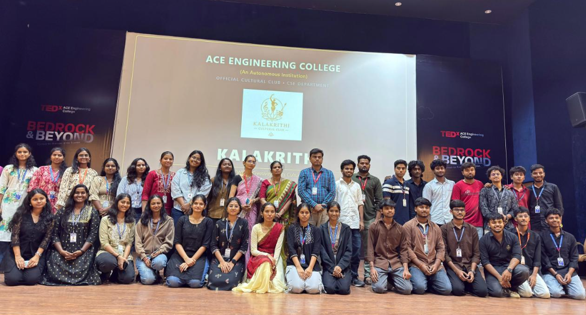
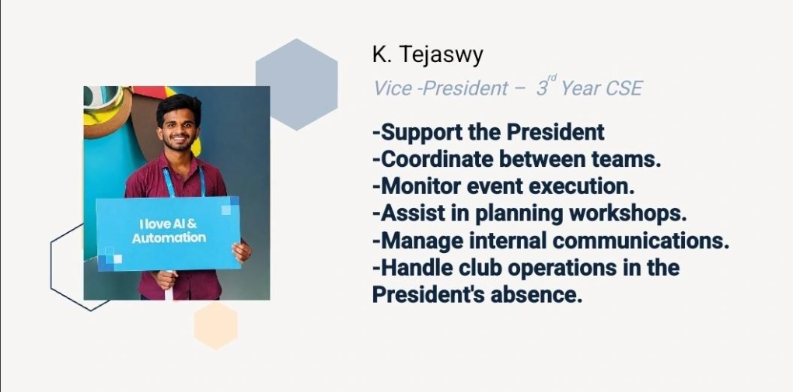

Extra Curricular Activities

AEON Club – Core Team Member
Core member of CSE Department Cultural & Technical Club.
- Event Planning & Execution
- Team Leadership
- Public Speaking
- Solution Sprint Event
- Nexora Technical Event

NSS Volunteer
Active volunteer in ACE NSS activities.
- Social Responsibility
- Community Engagement
- Bathukamma Celebration 2026
- Parampara 2026

UiPath Student Community – Core Team
Core team member contributing to automation learning initiatives.
- AgentHack Ideathon Session
- Mentorship Programs
- Community Engagement

UiPath Student Developer Champion – 2026–27
Selected as a UiPath Student Developer Champion to promote automation learning, support students, and build an active UiPath community at ACE Engineering College.
- Conducting UiPath learning sessions, workshops, and technical activities
- Guiding students through UiPath Academy courses and certifications
- Helped 100+ students complete introductory automation training
- Organizing automation projects, hackathons, and community events
- Connecting students with the wider UiPath developer community

Kalakrithi Club – Scheduling Team Co-Lead
Serving as the Scheduling Team Co-Lead of Kalakrithi, a CSE department club that organizes technical and cultural events for students.
- Event Scheduling and Coordination
- Technical and Cultural Event Planning
- Team Coordination and Task Management
- Preparing Event Timelines and Schedules
- Coordinating with Organizers, Volunteers, and Participants

Nexus Technical Club – Vice President
Serving as the Vice President of the Nexus Technical Club, supporting the President and coordinating club activities, teams, workshops, and technical events.
- Support the President in planning and managing club activities
- Coordinate between different teams and club members
- Monitor the execution of technical events and workshops
- Assist in event planning, scheduling, and task allocation
- Manage internal communication and team coordination
- Handle club operations in the President’s absence


Medium Technical Blog Writer
Writing beginner-friendly technical blogs on Medium to explain UiPath, RPA, AI automation, and workflow concepts through simple real-life examples.
- Publishing educational content on UiPath and automation
- Explaining technical concepts in simple language
- Sharing practical examples, workflows, and project learnings
- Helping beginners understand automation technologies
- Building a public knowledge portfolio through consistent writing

LinkedIn Technical Content Creator
Sharing practical knowledge about UiPath, RPA, AI automation, and workflow development through technical posts and project demonstrations.
- 2000+ LinkedIn followers
- Creating content on UiPath, RPA, and AI automation
- Sharing projects, blogs, and automation use cases
- Supporting learners through technical discussions